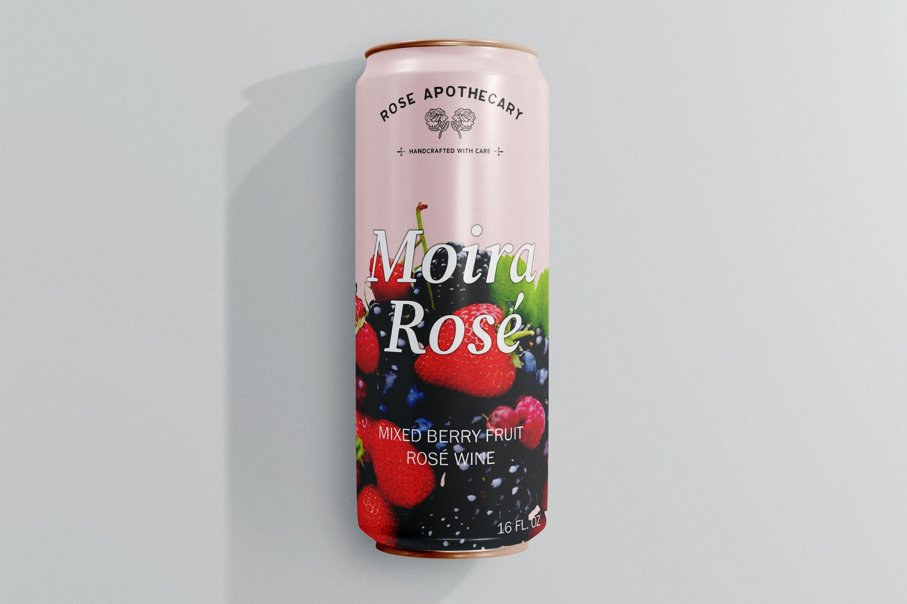

Visual Communication
Schitt's Creek
Client: Schitt's Creek
Project Type: Graphic Typography
Competencies: Photography, Typography, Layout, Composition
Software: InDesign, Photoshop, Illustrator
Exploring multiple ideas before defining the solution
braindstroming process
Once I selected Schitt's Creek as my overarching theme, I focused on defining a clear approach for each project. I wanted to capture the essence of the Schitt family—over-the-top, dramatic, yet elegant and dynamic—while highlighting individual characters and the show as a whole. To achieve this, I decided to use typeface as a strong visual element and a minimal color palette, allowing the personality of the characters and the show's tone to take center stage in each design.

